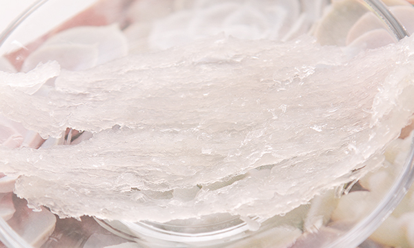
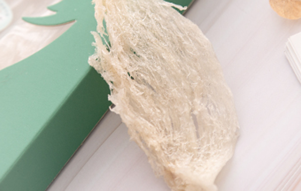
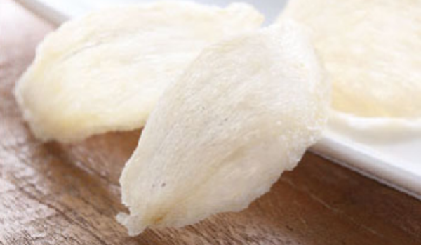
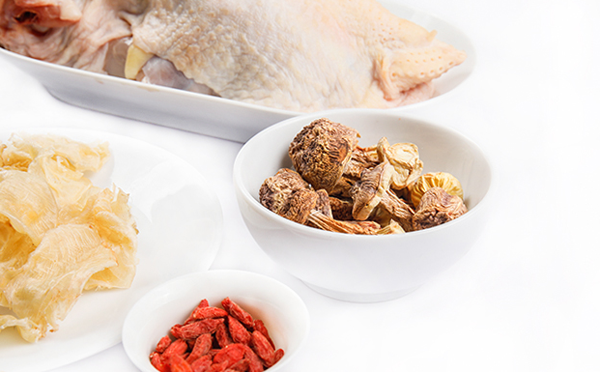

孕妇吃燕窝的好处主要有帮助补充孕妇怀孕期间的营养，燕窝有着能帮助生长发育的成分，孕妇吃燕窝对胎儿的生长发育好。燕窝有着滋补身体提高免疫力的功效，并且孕妇吃燕窝出生后的孩子比较白，并且孩子出生后的生长发育快，抵抗力强。备孕前吃燕窝有着助孕的作用。
1、燕窝营养丰富

孕妇吃燕窝是非常好的，这是因为燕窝中含有丰富的营养成分，孕妇在怀孕前三个月里坚持每天吃燕窝，能加强胚胎的着床，避免流产。还能帮助孩子的生长发育，母体的营养充足对孩子在母体的发育是有好处的。
2、燕窝提高孕妇免疫力

燕窝能够提高孕妇的免疫力，孕妇有很多药是不能吃的，孕妇在怀孕的9个月里是最好不要感冒以及被病毒感染的。因为感冒以及病毒感染引起的任何疾病都会对孩子造成影响，所以孕妇在怀孕期间吃燕窝能够提高抵抗力，减少生病的几率。
3、燕窝能帮助孩子发育

燕窝是能够帮助孩子发育的，燕窝含有大量的生长因子，燕窝对孩子的发育是非常好的。像新加坡、香港、台湾都会在怀孕的前三个月里给孕妇炖燕窝食用，这是因为燕窝能帮助孩子未来的发展。
4、对未来的新生儿有好处
孕妇吃燕窝对孩子未来的好处是非常多的，妈妈在怀孕期间吃燕窝，生出来的孩子会非常白暂漂亮。很多人都非常想要一个长得好看的小孩，但是孩子的长相和遗传是有关系的，俗话说的好“一白遮百丑”，孩子出生就很白，对未来的颜值是非常重要的。
5、备孕吃燕窝可以助孕
备孕期间是可以吃燕窝的，像高龄孕妇还有宫寒严重的朋友以及子宫有一定创伤的朋友在怀孕之前吃燕窝能够帮助受孕。还有习惯性流产的朋友可以将燕窝和安胎药一起吃，能帮助稳定胚胎，治疗习惯性流产。
1、不能多吃
孕妇吃燕窝也是有禁忌的，燕窝虽然是滋补的好东西但是燕窝也不能多吃，像每天吃3-4g，就可以了，吃多了人体会不吸收。每天吃太多可能会导致身体的不适。孕妇最适合吃燕窝的时间是早上起床和晚上睡觉前空腹食用。
2、不能吃太多补品

孕妇要注意怀孕期间也不能吃太多补品，补品虽然都是滋补的，但是一口气吃太多种类的补品，药物之间可能会有影响。轻的会营养不吸收，重的可能会对胎儿造成影响。孕妇的食补最好听取一下专业营养师的建议选择正确的补益药材来进行滋补。
结语：通过上文的介绍，相信大家都了解了关于孕妇吃燕窝的好处，希望大家在怀孕备孕期间能够正确的使用燕窝滋补。孕妇不仅需要滋补还要注意运动，长期不运动一直卧床很容易导致栓塞，出现生命危险。